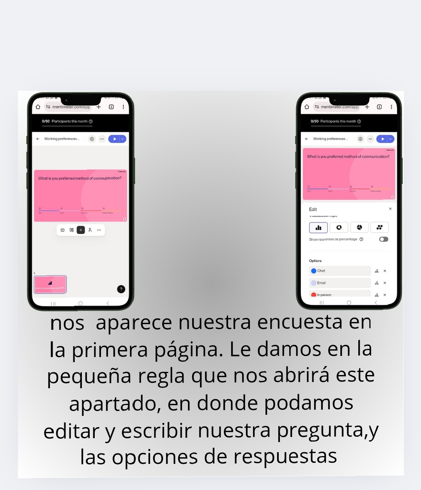

MENTIMETER
¿QUE ES MENTIMETER?
Mentimeter es una pagina de encuestas creativas que pueden ayudar a mejorar la participacion estudiantil, ya que son en tiempo real, ayuda a transformar las clases en un entorno participativo
¿PARA QUE SIRVE?
mentimeter tiene demasiadas funciones creativas como lo son :
crear presentaciones interactivas
encuestas
nubes de palabras
juegos
votaciones
auncios de publicidad
reuniones
eventos interactivos
¿como lo puedo utilizar?
paso 1
paso 2
paso 3

paso 4
Paso 5
>
Paso 6
¿QUIEN LO CREO?
el creador de mentimeter es johnny warstrom un emprendedor sueco,fundo mentimeter en el 2014 con la intension de interactuar de manera mas efectiva.
¿como ha ayudado?
mentimeter a ayudado a mejorar la interaccion en las presentaciones en el ambito academico y labora, ya que la mayoria de las funcione son interactivas y dinamicas, lo que ha mejorado la participacion de la audencia
¿que la diferencia de las demas?
lo que diferencia a mentimeter de las demas es que canva se enfoca de crear presentaciones publicaciones en redes sociale, materiales de marketing, tambien no tiene interaccion en tiemo real, genially es casi igual pero presisamente no es lo mismo, ya que si tiene la interaccion pero no en tiempo real.
¿COMO HACER UNA NUBE DE PALBRAS?
PASO 1
PASO 2
PASO 3
PASO 4
regreso